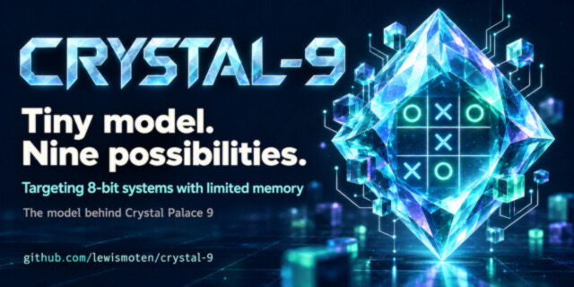

Crystal-9
Tiny MoE for 8-bit hardware

A compact, validated mixture-of-experts tic-tac-toe policy model: a 46,299-byte packed INT4 artifact with zero policy misses across 294,778 legal histories.
Executive summary
Why it exists
A model that has to run on tight memory budgets can't borrow a general vocabulary or a standard runtime. The goal was the smallest truthful local MoE tic-tac-toe policy model, built clean-room.
Outcome
The released artifact is 46,299 bytes, with zero policy misses across 294,778 legal histories. A compact adaptation powers Crystal Palace 9 on the Commodore 64. Releases are packaged with checksums when a version tag is pushed.
My role
Designer, director, maintainer, and publisher. Code and documentation were developed with assistance from GPT-5.6-terra Med, accessed through Hermes with Honcho for project memory.
Technical overview
How it works
A separately trained attention and mixture-of-experts policy with its own 13-token vocabulary and an eight-move history: token and position embeddings, one causal attention layer with 8 heads at width 32, a learned router, and 9 experts (each 32 to 32 to 32) with top-2 selection, 24,726 parameters in all. INT4 and INT3 versions run in independent packed runtimes, and an INT4 artifact was released for a custom local runtime.
Hard parts
Precision is a policy, not a promise. FP32 is the baseline; F16, Q6_K, Q4_K_M, Q3_K, Q2_K, and experimental 1-bit-family formats are only candidates. A format is publishable after the exact target runtime passes the complete legal-policy and invalid-input gates. The custom vocabulary is separate from the earlier Ollama-compatible one, so Crystal-9 has to prove token-ID parity before claiming Ollama compatibility. For a standard llama.cpp or Ollama model I point to Palace-9.
How it was made
Crystal-9 made the network smaller and gave each layer 32 nodes, to use tensor operations that compute 32 values at the same time. In the end that was more than the task needed, a lesson that went into Falken-9. The name, like Palace-9's, comes from Crystal Palace, the NORAD call sign in WarGames.
Training used PyTorch with AdamW on an RTX 3080 Ti: 100 epochs over all 294,778 move histories reached zero misses at full precision. Quantization went in stages, part of the network at a time, with quantization-aware training at each step; a trial that ended with even one miss was rejected. INT2 was explored as research, ending in a 20,737-byte copy that still had zero misses but wasn't released. A tensor inspector drew every weight as an image, and tests compared the Python and JavaScript runtimes.